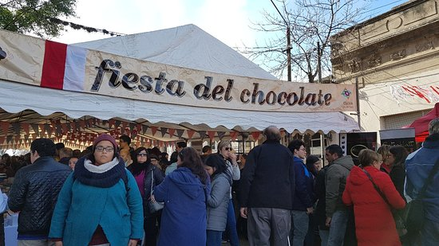

Calendario de eventos
Enero
- Desfile inaugural del Carnaval- Montevideo
- La Noche Blanca -Canelones
- Festival del Lago Andresito - Flores
- Canelones Suena Bien - Canelones
- Semana de San Fernando - Maldonado
- Jazz a la calle- Soriano
Febrero
- Desfile de Llamadas - Montevideo
- Festival Nacional del Folclore - Durazno
- Pan de Azúcar: Dulce Corazón del Canto - Maldonado
- Fiesta Nacional del Sábalo- Colonia
- Festival del Salto de Agua - Treinta y tres
Marzo
- Festival Internacional de Jazz - Maldonado
- Montevideo Tango Festival y Mundial - Montevideo
- Festival Internacional de Cine de Punta del Este- Maldonado
- Festival del Vino y la Vendimia en Carmelo - Colonia
Abril
- Festival de Minas y Abril - Lavalleja
- Festival del Asado con Cuero- Rocha
- Fiesta de la Uva y el Vino - San José
- Cosquin Rock - Montevideo
Mayo
- San Isidro Labrador- Canelones
- Festival del butiá- Rocha
- Fiesta de la Miel- Florida
- Fiesta del Queso- Colonia
Junio
- Celebración de San Cono- Florida
- Casupa le canta al Prócer -Florida
- Celebración de las Hogueras de San Juan- Montevideo
Julio
q

- Fiesta del Arroz- Cerro Largo
- Fiesta Rusa de San Javier- Rio Negro
- Fiesta Nacional del Chocolate- Colonia
Agosto
- Fiestas Suizas- Colonia
- Noche de la nostalgia -Todo el pais
- Festival del Payador- San José
Septiembre
- Semana Farroupilha y del Patrimonio- Rivera
- Expo Prado- Montevideo
- Soriano Cocina-Soriano
- Encuentro con el Patriarca- Paysandú
Octubre
- Fiesta de la Torta Frita- Canelones
- Fiesta de la primavera- Soriano
- Noche de los Fogones -Lavalleja
- Fiesta de las antorchas- Colonia
- Fiesta de la leche- Florida
Noviembre
- Fiesta del cordero pesado -Florida
- Fiesta de las colectividades -Colonia
- Celebración de la Virgen de los Treinta y Tres- Florida
- Fiesta del Rosedal-Durazno
Diciembre
- Veni a cantarle a Gardel - Tacuarembó
- La Redota- Salto
- Fiesta Nacional del Alfajor - Lavalleja
- Semana de Rivera- Rivera